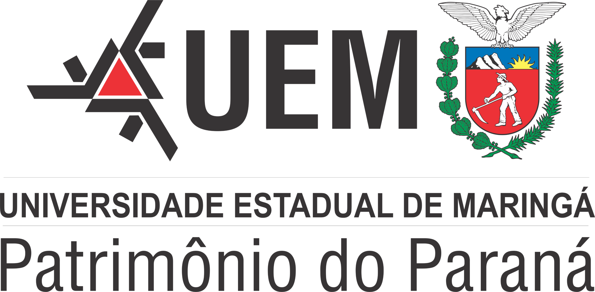
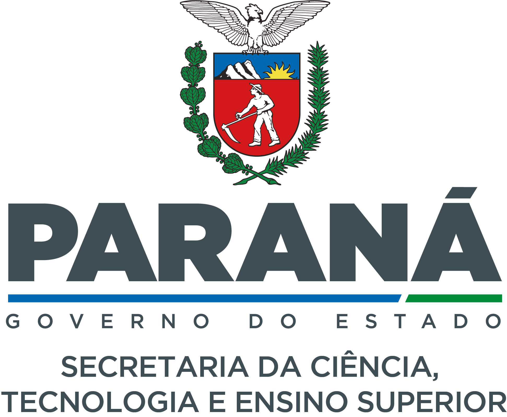

This event brings Professor Jacek Gondzio from the
University of Edinburgh, Scotland, UK, for a 2-week visit in
Maringá. Professor Gondzio is very well known by his vast
experience in Interior Point Methods, specially for large
scale problems, and will share his knowledge with graduate
students and researchers in the State of Paraná, as well as
anyone interested in the subject. The event is supported by
Fundação Araucária and The Newton Fund under grant PI
04/2019 "UK ACADEMIES - RESEARCH MOBILITY". It also has
the support of the Postgraduate Program in
Mathematics at the State University of Maringá.
Este evento traz o professor Jacek Gondzio da Universidade de Edimburgo, Escócia, Reino Unido, para uma visita de 2 semanas em Maringá. Professor Gondzio é reconhecido pela sua vasta experiência em Métodos de Pontos Interiores, em especial problemas em larga escala, e irá compartilhar seu conhecimento com alunos de graduação, pós-graduação e pesquisadores, assim como o público interessado em geral. O evento tem o apoio financeiro da Fundação Araucária e do Fundo Newton através da chamada PI 04/2019 "UK ACADEMIES - RESEARCH MOBILITY". Também tem o apoio do programa de pós-graduação em Matemática da Universidade Estadual de Maringá.
Este evento traz o professor Jacek Gondzio da Universidade de Edimburgo, Escócia, Reino Unido, para uma visita de 2 semanas em Maringá. Professor Gondzio é reconhecido pela sua vasta experiência em Métodos de Pontos Interiores, em especial problemas em larga escala, e irá compartilhar seu conhecimento com alunos de graduação, pós-graduação e pesquisadores, assim como o público interessado em geral. O evento tem o apoio financeiro da Fundação Araucária e do Fundo Newton através da chamada PI 04/2019 "UK ACADEMIES - RESEARCH MOBILITY". Também tem o apoio do programa de pós-graduação em Matemática da Universidade Estadual de Maringá.

Coordinators:
Francisco N. C. Sobral
(UEM)
Contact:
fncsobral at uem dot br
Cronograma da visita
Segunda 17 - Quinta 20 de abril de 2023 - UEM - Universidade Estadual de Maringá
Curso "Interior Point Methods for Very Large Scale Optimization" - UEM - 17 a 19 de abril, das 10h às 16h
"Interior Point Methods for Very Large Scale Optimization"
State University of Maringá UEM
Local: Auditório do DMA, Bloco F67, Sala 217, Universidade Estadual de Maringá
Horário: Segunda 17 a Quarta 19 de abril de 2023, das 10:00-12:00 e das 14:00-16:00
Prof Jacek Gondzio
School of Mathematics
The University of Edinburgh
URL: http://www.maths.ed.ac.uk/~gondzio/
Abstract:
Interior point methods (IPMs) have been around for 30 years and have completely changed the field of optimization. In this series of lectures we will focus on major features responsible for the spectacular efficiency of IPMs when applied to the solution of very large problems. Those include:
State University of Maringá UEM
Local: Auditório do DMA, Bloco F67, Sala 217, Universidade Estadual de Maringá
Horário: Segunda 17 a Quarta 19 de abril de 2023, das 10:00-12:00 e das 14:00-16:00
Prof Jacek Gondzio
School of Mathematics
The University of Edinburgh
URL: http://www.maths.ed.ac.uk/~gondzio/
Abstract:
Interior point methods (IPMs) have been around for 30 years and have completely changed the field of optimization. In this series of lectures we will focus on major features responsible for the spectacular efficiency of IPMs when applied to the solution of very large problems. Those include:
- nice properties (self-concordance) of logarithmic barriers which deliver the polynomial complexity of IPMs,
- a unified view of IPMs for linear, quadratic, convex nonlinear, second-order cone and semidefinite programming.
- Duality
- Interior Point Methods for LP
- Interior Point Methods for QP and (convex) NLP
- Linear Algebra in IPMs
- Second-Order Cone Programming (SOCP) and SemiDefinite Programming (SDP)
- Modern Applications of IPMs
Conversa com o prof. Jacek Gondzio - Quinta 20 de maio de 2023 das 10h às 12h
Lista de inscritos
Segunda 24 - Sexta 28 de abril de 2023 - UEM - Universidade Estadual de Maringá
Local:
Horário: 16:00
Título:
Resumo:
Horário: 16:00
Título:
Resumo:


Last Update: March 12, 2023.